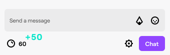

COMO FUNCIONA?
Você ganha Pontos do Canal periodicamente à medida em que assiste o canal. Além disso, durante certos intervalos, você vai receber notificações do tipo "clique e resgate" na parte inferior da janela do chat. Esses bônus dão mais pontos para você.
Para resgatá-los, clique na notificação; seu saldo de pontos será então atualizado conforme o valor recebido.
Os Pontos do Canal obtidos ao seguir e participar de raids são resgatados automaticamente para a sua conta.
Mas isso não para aí! Mantenha uma sequência de visualizações no canal quando for assistir à sua próxima transmissão.
Assistir a transmissões consecutivas aumenta a sua sequência de visualizações, e você ganha automaticamente mais ProudCoins para cada transmissão consecutiva que assistir, contanto que a sequência de visualizações continue intacta.
Não perca nenhuma transmissão, ou a sequência de visualizações vai ser rompida! Fique em dia com a programação para evitar que isso aconteça!
Índice de obtenção de Pontos do Canal
Você pode ver abaixo o índice atual de obtenção de Pontos do Canal por meio de várias ações. Esses valores estão sujeitos a alterações.
| Ação de obtenção | Descrição | Pontos obtidos |
|---|---|---|
| Assistindo | Espectadores não inscritos recebem pontos a cada 5 minutos de visualização ao vivo. | +10 |
| Assistindo ativamente | Espectadores não inscritos recebem pontos a cada 15 minutos de visualização ao vivo. (Clique para resgatar) | +50 |
| Participando de uma raid | Espectadores recebem pontos quando participam de raids. | +250 |
| Seguir | Espectadores recebem pontos quando seguem o canal. Esses pontos só podem ser obtidos uma vez. | +300 |
| Sequência de visualizações 2 | Espectadores recebem pontos quando retornam por 2 transmissões seguidas. Cada transmissão deve durar pelo menos 10 minutos, e deve haver um intervalo de no mínimo 30 minutos entre cada transmissão. | +300 |
| Sequência de visualizações 3 | Espectadores recebem pontos quando retornam por 3 transmissões seguidas. Cada transmissão deve durar pelo menos 10 minutos, e deve haver um intervalo de no mínimo 30 minutos entre cada transmissão. | +350 |
| Sequência de visualizações 4 | Espectadores recebem pontos quando retornam por 4 transmissões seguidas. Cada transmissão deve durar pelo menos 10 minutos, e deve haver um intervalo de no mínimo 30 minutos entre cada transmissão. | +400 |
| Sequência de visualizações 5+ | Espectadores recebem pontos quando retornam por 5 transmissões seguidas. Cada transmissão deve durar pelo menos 10 minutos, e deve haver um intervalo de no mínimo 30 minutos entre cada transmissão. | +450 |
| 1º Cheer | Espectadores recebem pontos pelo primeiro Cheer que mandam para o canal a cada 30 dias. Cheers anônimos não irão render pontos. | +350 |
| 1ª inscrição de presente | Espectadores recebem pontos quando dão sua primeira inscrição de presente no canal a cada 30 dias. Inscrições de presente anônimas não irão render pontos. | +500 |
 Dica: Se você tiver uma inscrição em um canal, irá ganhar mais Pontos do Canal à medida que for assistindo.
Dica: Se você tiver uma inscrição em um canal, irá ganhar mais Pontos do Canal à medida que for assistindo.
- Grupo 1: multiplicador de 1,2x ao assistir.
- Grupo 2: multiplicador de 1,4x ao assistir.
- Grupo 3: multiplicador de 2x ao assistir.